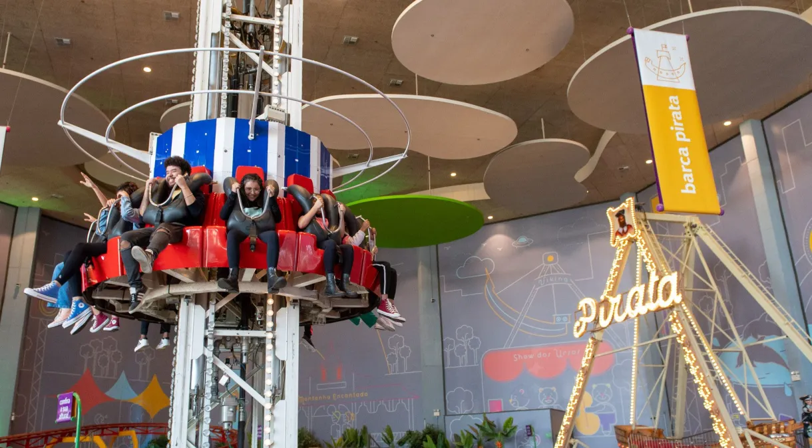

Israel encontra QG do Hamas no subsolo de prédio da ONU em Gaza
Forças de Israel encontraram um centro de dados “top secret” do Hamas no subsolo da sede de uma agência da ONU em Gaza.
Por Emanuelly Castro, amvsnews19/02/2024


Segundo Israel, esse era um dos centros de inteligência e comunicação do Hamas —de onde eles comandavam a maior parte dos combates.
Israel afirma, inclusive, que a energia do sistema de túneis do Hamas em Gaza vinha desse datacenter, que receberia energia do prédio da agência de ajuda humanitária.
Pra que isso importa? A localização desse QG é mais um forte argumento para Israel sobre a possível relação direta da agência da ONU com o grupo palestino.
Israel afirma, inclusive, que a energia do sistema de túneis do Hamas em Gaza vinha desse datacenter, que receberia energia do prédio da agência de ajuda humanitária.
Se você não lembra, há duas semanas, Israel acusou funcionários do órgão de terem sido aliados do Hamas no campo de batalha. Inclusive, depois disso, dez democracias suspenderam o envio de verbas para essa agência —que a princípio seriam exclusivamente para ajuda humanitária ao povo de Gaza
Enquanto isso, Lula esteve na embaixada palestina e anunciou que vai aumentar essa verba à agência, afirmando que as suspeitas devem ser investigadas, mas não podem paralisar a ajuda à Gaza.
Leia mais:Cacau Show compra Grupo Playcenter e entra para o ramo de parques e entretenimento
 Brinquedos do Playcenter Family no Shopping Aricanduva, em São Paulo Divulgação — Foto: CNN Brasil
Além dos chocolates, a Cacau Show oficializou a entrada no mundo dos parques temáticos e do entretenimento. A empresa anunciou nesta terça-feira (20) a compra do Grupo Playcenter, que atualmente opera as marcas Playcenter Family e Playland, espaços com brinquedos dentro de shoppings centers.